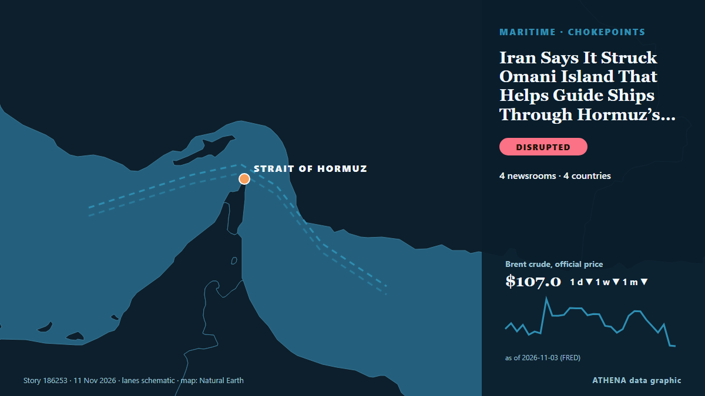

Trade, Industry & Infrastructure
SponsoredPresented by  Cybernetics and Artificial Intelligence Lab Welcome to the Cybernetics and Artificial Intelligence Laboratory, established at the Department of Business Administration of the National and Kapodistrian University of Athens. The lab is headed by Professor Dimitrios Thomakos. The lab aims to do research that can be published in top venues. Our research uses tools and methods of Artificial Intelligence, and lies in the following areas: - Forecasting - Decision making - Cyber security - Finance We are always looking forward to collaborating with exceptional students!
Cybernetics and Artificial Intelligence Lab Welcome to the Cybernetics and Artificial Intelligence Laboratory, established at the Department of Business Administration of the National and Kapodistrian University of Athens. The lab is headed by Professor Dimitrios Thomakos. The lab aims to do research that can be published in top venues. Our research uses tools and methods of Artificial Intelligence, and lies in the following areas: - Forecasting - Decision making - Cyber security - Finance We are always looking forward to collaborating with exceptional students!

Shipping & portsIran Says It Struck Omani Island That Helps Guide Ships Through Hormuz’s Southern Route
Iran has claimed a strike on Oman's Didamar Island at the entrance to the Persian Gulf, and Oman confirmed a loud explosion at the base on the island. from Marine Insight
| 29 Oct | 95 |
|---|---|
| 30 Oct | 99 |
| 31 Oct | 36 |
| 1 Nov | 65 |
| 2 Nov | 128 |
| 3 Nov | 91 |
| 4 Nov | 93 |
| 5 Nov | 105 |
| 6 Nov | 75 |
| 7 Nov | 44 |
| 8 Nov | 49 |
| 9 Nov | 113 |
| 10 Nov | 112 |
| 11 Nov | 39 |
Students shiver in classrooms as Iran government warns of gas cuts
Students across Iran are attending classes without adequate heating despite freezing temperatures and heavy rainfall, as the government warns of possible gas shortages but insists on keeping schools… from Iran International (English)
Tong Hsing buys Global Testing to become integrated OSAT provider
Tong Hsing Electronic Industries (THEIL), a semiconductor packaging company under the YAGEO Group, said its board has approved the acquisition of a 100% stake in Singapore-listed Global Testing… from DigiTimes Asia
UKMTO reports tanker incident in Strait of Hormuz
UKMTO reported an incident involving a tanker in the Strait of Hormuz. from Arab News
Abeille Marengo Sails to Begin Greece-Cyprus Cable Surveys as Turkey Claims Its Consent Was Obtained, Athens Pushes Back
The French research vessel Abeille Marengo sailed from the port of Heraklion at 6:26 p.m. on Tuesday, November 10, to begin seabed surveys for the Greece-Cyprus electricity interconnection. from The National Herald
Another tanker hits mine in Strait of Hormuz
Coalition says it destroyed two ballistic missile launchers The Coalition has released footage it says shows the targeting and destruction of two ballistic missile launch platforms. from Gulf News
350,000 SAS passengers may have had details leaked in major data breach
Hundreds of thousands of SAS passengers may have had their booking details exposed in a massive data breach. from The Local Denmark
Russian Diesel Tanker Awaits Destination Off US East Coast
A tanker carrying the first cargo of Russian diesel for the United States has come to a halt off the US east coast, shipping data showed on Tuesday, with its operator saying its destination had not… from MarineLink
LR and MAWANI sign agreement to support the development of Saudi Arabia’s maritime and ports sector
Collaboration will explore opportunities spanning safety, sustainability, digitalisation, institutional capability and professional development Lloyd’s Register (LR) and the Saudi Ports. from Cyprus Shipping News
Black Sea Shipping Activity Falls 37% As Attacks On Merchant Ships Increase
Black Sea shipping activity has fallen by 37% compared with last year as attacks on merchant ships and port infrastructure have increased, Intent reported. from Marine Insight
Families’ agony after deadly Turkey steel blast kills 18
An explosion at a steel plant in Izmir, western Türkiye, killed six people and injured 13 others, on Monday, as rescue teams searched for 10 people trapped under rubble. from Daily Sabah
Toyota to bring mini trucks to US market
The automaker will invest $34 million into the initiative and add 50 jobs. from The Independent
Tankers continue to burn in the Middle East despite hopes for de-escalation
(Corrects in paragraph 4 to 'a Navig8 tanker', removing reference to 'Navig8 Messi'; it was not clear which Navig8 tanker was shown) Nov 10 (Reuters) - Despite market bets on a de-escalation in the… from Al-Monitor
China's trade surplus soars past US$1 trillion as AI boom powers exports
Exports rose sharply by 35.2 per cent in October from the same month last year, helping to lift China's trade surplus to US$1.04 trillion in the first 10 months. from CNA (Channel NewsAsia)
Adnoc says vessel damaged after attack in UAE waters on November 10
[Editor's Note: Follow Khaleej Times live blog for the latest regional developments since the US-Iran war started on February 28]. from Khaleej Times (working feed)
Boeing to cut 5pc of commercial jet workforce
Your browser does not support the audio element. from New Straits Times
EU manufacturers could give up on competing with China by 2030, warns commerce chief
Jens Eskelund says Europe may need to allow its companies to become part of Chinese firms’ supply chains Europe’s manufacturers could give up on attempting to compete with their Chinese counterparts… from The Guardian
Train drivers strike in Spain after 115 killed in two crashes this year
Renfe said 40 per cent of long- and medium-distance services had been cancelled, affecting 4,042 passengers. from The Independent
12 dead and 50 injured in Bulgarian motorway pile-up
Twelve people have died and 50 were injured in pile-ups on both sides of a motorway in southeastern Bulgaria, whose roads rank as the most dangerous in the EU. from RTÉ News
Senate advances bill to speed up projects from gas pipelines to clean energy
Key environmental groups come out against bipartisan Baaja bill over fears it could spur datacenters and ICE jails The Senate on Monday advanced bipartisan legislation aimed at speeding up permitting… from The Guardian
BYD Offices Raided in Jaguar Land Rover Design Dispute
Jaguar Land Rover is pursuing legal action against BYD over allegations that the Chinese automaker's Ti7 SUV infringes the Defender's design rights, following reported raids on BYD offices in the… from Greek City Times
Lithuania to tighten checks on Russian grain shipments
If the declared origin is found to be fraudulent, "the shipment will have to be returned or destroyed." from Kyiv Independent
3 workers die of asphyxiation at Tata's iPhone parts factory in Tamil Nadu
The workers died during maintenance work on a water tank at the company's Hosur facility, which makes components for Apple iPhones. from Business Standard
LNG transportation via Hormuz reached peak in October since February 2026 — Reuters
According to data from S&P Global Energy, 31 LNG tankers went through the Strait of Hormuz, of which 23 were loaded at Ras Laffan in Qatar and eight at Das Island in the UAE. from TASS (English)
Russia Hits Epicentr K Mall in Kropyvnytskyi, 2 Injured
A Russian attack hit an Epicentr K shopping center in Kropyvnytskyi on Tuesday morning, injuring two people and starting a fire after a repeat strike. from Kyiv Post
Iran says 3 tankers caught fire in Hormuz
The Revolutionary Guards did not specify the names or nationality of the tankers. from Free Malaysia Today
Hajj plans begin early as global pilgrimage industry gathers in Jeddah
As preparations for the upcoming Hajj season commence in Saudi Arabia, the sixth Hajj Conference and Exhibition in Jeddah has gathered representatives from over 520 organizations across 150 countries. from Arab News
Israel claims Iranian-linked leaflets found in Tel Aviv threaten to cripple Israeli infrastructure
Israeli police open investigation after flyers attributed to Handala hacking group found in mailboxes. from Anadolu Agency (English)
China extends suspension of 24pct tariff on US goods for two months
BEIJING: China on Monday extended the suspension of its additional tariff of 24 per cent on US imports and the suspension of special port fees on US-linked ships for two months. from New Straits Times
Kazakhstan, US Look to Broaden Trade and Investment Cooperation at Business Forum in Washington
The Astana Times provides news and information from Kazakhstan and around the world. from The Astana Times
Iran says no unauthorised vessels transited Strait of Hormuz overnight after navigation aids destroyed
DUBAI, Nov 9 (Reuters) - Navigational aid systems in the south of the Strait of Hormuz were destroyed and no unauthorised vessels transited the maritime route overnight, an unnamed Revolutionary… from Al-Monitor
11th chainPORT annual meeting at Tanger Med Focuses on scaling AI in ports
Representatives from leading ports around the world gathered in Tangier, Morocco, on 29 and 30 October for the 11th chainPORT. from Cyprus Shipping News
Bomb Threat Evacuates 875 Passengers From Blue Star 1 in Piraeus
Bomb Threat Forces Evacuation of 875 Passengers From Piraeus Ferry A bomb threat targeting the passenger ferry Blue Star 1 triggered an emergency response at the port of Piraeus, forcing the… from Greek City Times
Peru airport thwarts plot to smuggle 3,000 tarantulas in dirty socks
During a routine customs inspection, agents noticed some unusual wriggling inside the luggage. from The Straits Times